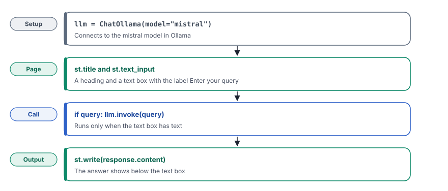

A web page in front of a model lets people ask questions in a browser, so that they can use your app without the terminal.
What you will learn
- Why an AI app needs a user interface, and why Streamlit is a quick way to make one
- How to show a heading, a text box and an answer with a few lines of Python
- How Streamlit runs your script again after each action on the page
- What the Local URL and the Network URL mean, and why the second one needs care
Read chapter 3 first. In this chapter, you will put a web page in front of the program that you built there.
The idea
In chapter 3, you asked the model a question in the code and read the answer in the terminal. That works for you as a developer. Most users never open a terminal, so an app needs a page where they can type a question and read the answer.
Streamlit is a Python library that makes such a page from a short script. You do not write HTML, CSS or JavaScript. Each Streamlit function, such as st.text_input, adds one element to the page. You build the interface in the same file as the rest of your app.
Streamlit has one rule that shapes every app in this track. Each time that the user does something on the page, Streamlit runs your whole script again, from the first line to the last. The page always shows the result of the latest run.
A Streamlit script is like a whiteboard that a teacher redraws after each question from the class. The teacher does not edit one corner of the board. The teacher wipes it and draws everything again with the new information, so that the board always shows the current state.
![Every action on the page starts the script again from the first line to the last. Run 1, the page opens. The text box is empty, so the if statement is false and the model is not called. Run 2, the user types a question and presses Enter. Now query holds the question, the if statement is true and llm.invoke runs. At the end of run 2, st.write shows the answer below the text box. The script reaches st.write only after the model answers, so the page waits for the full answer. Streamlit keeps no variables between runs, and chapter 8 uses session state for that.](../../assets/img/diagrams/lc-04-rerun.svg)
What you will build
You will build a page with a heading and one text box. When the user types a question and presses Enter, the page will show the answer of the model below the box. The whole app has twelve lines.

Build it step by step
Step 1Create the file
In the code folder, create the folder 04_adding_streamlit_GUI and in it the file app_ollama.py.
Step 2Import the libraries
from langchain_ollama.chat_models import ChatOllama
import streamlit as stChatOllamaconnects to a model in Ollama, as in chapter 3.import streamlit as stimports Streamlit with the short namest. Every Streamlit function in this track starts withst., so that you can see at once which lines build the page.
Step 3Create the model
llm = ChatOllama(model="mistral")This chapter uses mistral, a larger model than gemma:2b. A larger model usually gives better answers, but it needs more memory and more time. You downloaded it when you set up your project.
Step 4Build the page
st.title("Ollama Chat with Streamlit")
query = st.text_input("Enter your query")st.titleshows a large heading at the top of the page, so that the user knows which app is open.st.text_inputshows a text box with the labelEnter your query. It returns the text that the user typed.- In the first run, the box is empty, so
queryholds an empty text. After the user presses Enter, Streamlit runs the script again, andqueryholds the question.
Step 5Call the model and show the answer
if query:
response = llm.invoke(query)
st.write(response.content)if query:calls the model only when the box has text. Without this check, the app sends an empty question each time that the page opens.llm.invoke(query)sends the question to the model, as in chapter 3.st.write(response.content)shows the text of the answer below the text box.st.writeaccepts many kinds of data, so it is the usual way to show a result.
Run it
Make sure that Ollama runs and that the langchain environment is active. Then start the app from the root folder of the project.
streamlit run code/04_adding_streamlit_GUI/app_ollama.pyStreamlit will start a small web server and print its address.
You can now view your Streamlit app in your browser.
Local URL: http://localhost:8501
Network URL: http://192.168.1.20:8501Open the Local URL in your browser. Type What is two-factor authentication? in the text box and press Enter. After a few seconds, the answer will appear below the box.

mistral below it.A language model does not always give the same answer. Your text can be longer or use other words. The first answer can take longer, because Ollama must first load mistral into memory.
Look closely
While the model writes, the page shows nothing new. The answer appears all at once, because invoke() waits for the full answer, and only then does the script reach st.write. With a large model and a long answer, the user can wait many seconds without any sign of progress.
The next chapter adds a spinner, a small waiting message, so that the user knows that the app works. In chapter 8, you will show the answer piece by piece while the model writes it.
Full code of chapter 4code/04_adding_streamlit_GUI/app_ollama.pyView on GitHub
from langchain_ollama.chat_models import ChatOllama
import streamlit as st
llm = ChatOllama(model="mistral")
st.title("Ollama Chat with Streamlit")
query = st.text_input("Enter your query")
if query:
response = llm.invoke(query)
st.write(response.content)Streamlit prints two addresses. The Local URL works only on your computer. The Network URL lets other devices on the same network open your app, such as a phone on the same Wi-Fi. On an office or public network, other people can then use your model.
To keep the app on your computer only, start it with streamlit run code/04_adding_streamlit_GUI/app_ollama.py --server.address localhost. Also remember that every text in the box goes straight to the model. Chapter 5 shows why that is a risk.
Check yourself
Why does the app check if query: before it calls the model?
In the first run, the text box is empty. Without the check, the app sends an empty question to the model each time that the page opens.
You type a question and press Enter. What does Streamlit do?
It runs the whole script again. This time, query holds the question, so the app calls the model and shows the answer.
What is the difference between the Local URL and the Network URL?
The Local URL opens the app on your own computer. The Network URL lets other devices on the same network open it.
Key terms at a glance
| Term | Meaning |
|---|---|
| Streamlit | A Python library that makes web pages from a short script, so that you need no HTML or JavaScript |
st.text_input | A text box on the page that returns the text that the user typed |
st.write | A function that shows text, tables or other data on the page |
| Rerun | Streamlit runs the whole script again after each action on the page |
| Local URL | The address of the app on your own computer, such as http://localhost:8501 |
| Network URL | The address that other devices on the same network can use to open the app |
Next
In this chapter, the user typed the full question. In chapter 5, you will write the instructions once in a prompt template. The user will then fill in only a few details.